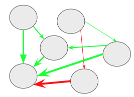
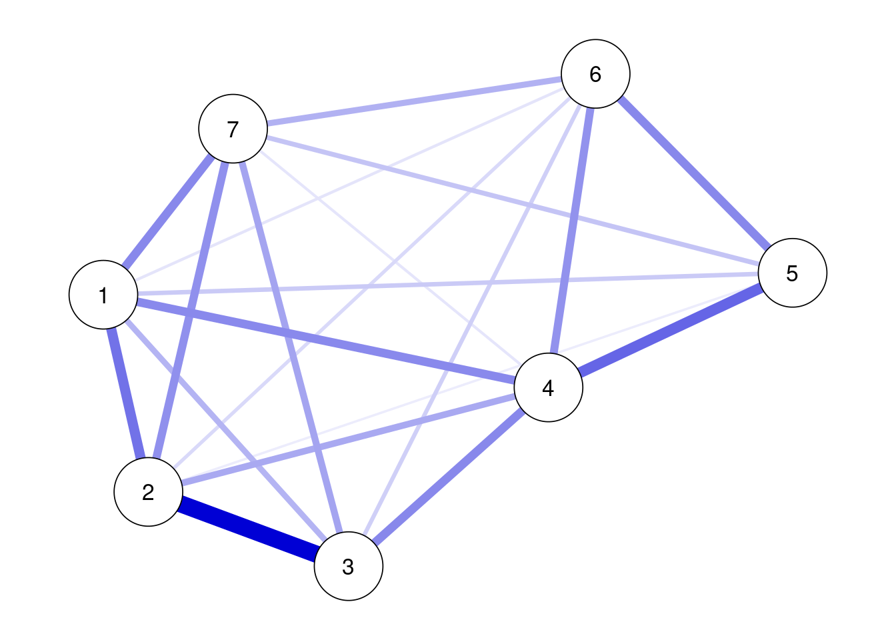
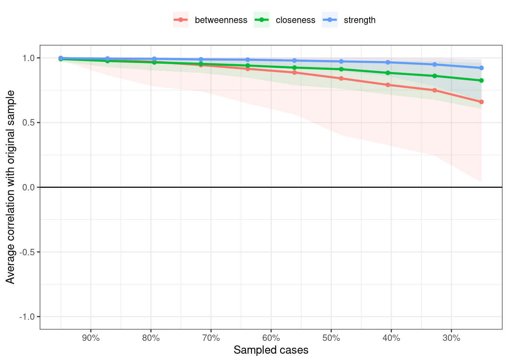
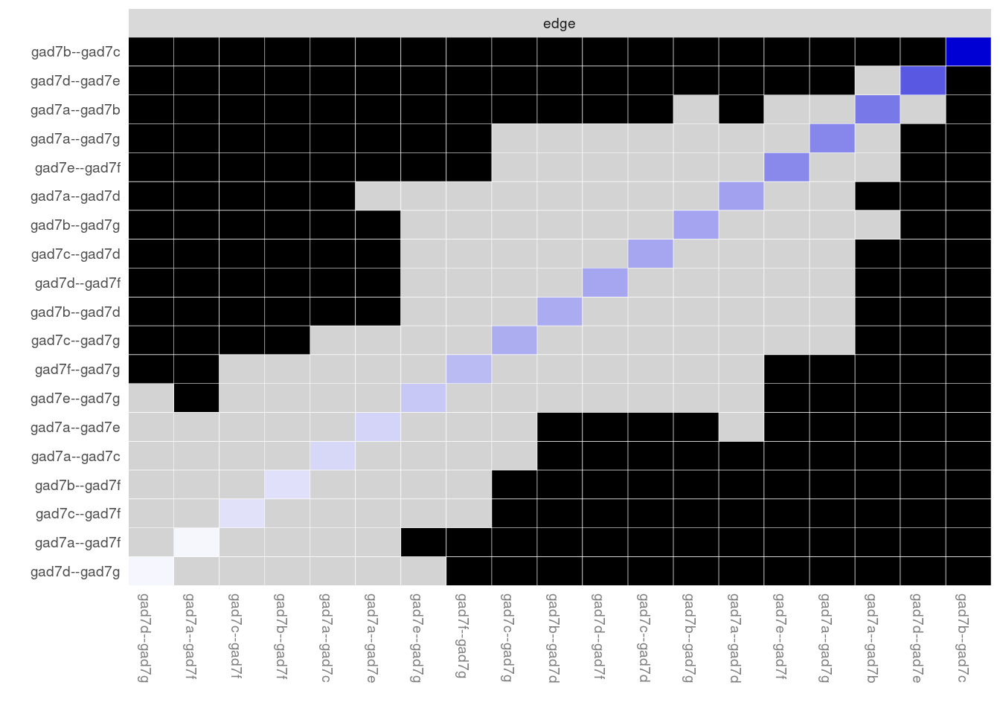
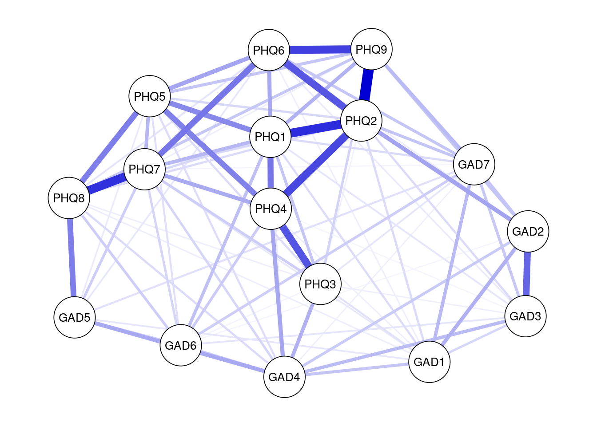

A <- matrix(c(1,-0.26,0.31,-0.26,1,-0.08,0.31,-0.08,1), 3, 3)
A [,1] [,2] [,3]
[1,] 1.00 -0.26 0.31
[2,] -0.26 1.00 -0.08
[3,] 0.31 -0.08 1.00日本心理学会(2022年)TWS-007「心理ネットワークアプローチ入門」
心理ネットワークは，観察可能な変数を表すノードと統計的関係を表すエッジから構成される(Sacha Epskamp, Borsboom, and Fried 2018)。心理ネットワークモデルは，因子分析やSEMなどのように潜在変数を仮定してそれから各項目・症状を説明するのではなく，症状（心理変数）間のネットワーク構造を検討する。
心理ネットワークは，以下の図のように，観察可能な変数を表すノードは円で，関係を表すエッジは線でプロットされる。

基本的な心理ネットワーク分析は，おおよそ以下の４ステップからなる。
ここで注意すべき点は，一般的なネットワーク科学で扱うネットワークの場合，エッジは観察可能な点である（例えば，電力網ネットワークのエッジは直接観察・測定可能になる）。しかし，心理ネットワークのエッジは，データから推定された重み付きネットワークである。エッジの推定はサンプルサイズの影響を受けるので，ネットワークのエッジの精度も検討する必要がある。また，一般的なネットワーク科学では，グローバルなネットワーク特性の指標が使われる(small worldness, density, global clustering)。しかし，心理ネットワークのような重み付きネットワークではこれらは使えない。そのため，２つのノードの関係や１つのノードがどのような影響力をもつのか（中心性の指標）といったローカルなネットワーク特性を用いる。
心理ネットワークの話の前に，有向ネットワークと無向ネットワークについて説明する。まず，有向ネットワークとはエッジに方向性があるネットワークである。以下の図ようにエッジが矢印になっているネットワークが有向ネットワークである。

矢印の方向には因果関係が想定される。例えば，「活動性低下→抑うつ気分増加」なら，活動低下が原因となって抑うつ気分増加するという意味になる。ただし，「活動性低下→抑うつ気分増加」と聞いて，「活動性低下←抑うつ気分増加」もありえるのではないかと感じた方もおられるかもしれない。そのとおりで，因果関係を言うには，まず原因は結果に時間的に先行する必要があり，因果に関連する変数が全て測定された上で，原因と結果が巡回しない（非巡回）必要がある。観察研究によって収集された心理学のデータの場合，時間的な前後関係は縦断データによって示せても，非巡回となるとかなり難しい。横断データに対する心理ネットワークでは，エッジに方向性がない無向ネットワークが用いられる。
横断データに対する心理ネットワークでは，エッジに方向性がない無向ネットワークが用いられる。エッジの色は符号を意味していて，青もしくは緑の場合は正，赤の場合は負を表す。エッジが正（青色もしくは緑色）の場合は，２つのノード間には正の関係性が存在する（片方が増えると，もう一方も増える）。エッジが負（赤色）の場合は，２つのノード間には負の関係性が存在する（片方が増えると，もう一方は減る）。また，エッジの太さは，関係の強さを表す。この場合の関係の強さとは，全体のノードからの影響を考慮した時の２つのノード間の関係の強さになる。そして，エッジの長さは，エッジの強さの逆数になる。つまり，ノード間の関係が強ければ強いほど，エッジは短くなる。
変数間の関係がある・ないというグラフを作る場合に，確率分布と結びつけるようなモデルのことをペアワイズ・マルコフ・グラフ(pairwise Markov graph)と呼ぶ。そして，心理ネットワークで用いる無向ネットワークモデルの推定では，ペアワイズ・マルコフ確率場(pairwise Markov random field: PMRF)がよく使われる(S. Epskamp et al. 2022)。心理ネットワーク分析で用いられるペアワイズ・マルコフ確率場は，基本的に重み付きネットワークである。ペアワイズ・マルコフ確率場では，ネットワークのエッジは，他のすべてのノードの影響を除外したあとでの２つのノード間の条件付き関連になる。つまり，２つのノード間にエッジがあるということは，条件付き依存(conditionally dependent)関係にあることを表し，一方でエッジがない場合は，条件付き独立(conditionally independent)関係にあることを表す。
ペアワイズ・マルコフ確率場には様々なモデルがあるが，心理ネットワーク分析においては，以下の３つのモデルがよく用いられる。
３モデルとも，エッジは条件付き関連の強さを表現しており，0では条件付き独立，0以外だと条件付き依存関係になる。GGMではエッジは-1から1の範囲で値をとる。Isingモデルではエッジは-∞から∞の範囲で値をとる。MGMではGLMの標準化された回帰係数を用いており，エッジは-1から1の範囲で値をとる。
データが連続かつ正規分布の場合には，多変量正規分布を用いたGaussian Graphical Model(GGM)が用いられる。心理学で収集するデータは，連続変数かつ正規分布を仮定できることも多いので，心理ネットワーク分析ではGGMがよく用いられる。GGMでは，変数間の関係を偏相関係数によってモデル化する。
Yは，ランダムに選んだ参加者からのn個の反応のベクトルである。Yは，平均 \(\boldsymbol{\mu}\) と分散共分散行列 \(\boldsymbol{\sum}\) の多変量正規分布に従う。
\[ \boldsymbol{Y} \sim N\left(\boldsymbol{\mu}, \boldsymbol{\sum}\right) \]
正規分布なので，尤度関数は以下のようになる（yはYの実現値）。
\[ f(\boldsymbol{Y}=\boldsymbol{y})=\frac{1}{\sqrt{(2 \pi)^{n}\left|\boldsymbol{\sum}\right|}} \exp \left(-\frac{1}{2}(\boldsymbol{y}-\boldsymbol{\mu})^{\mathrm{T}} \boldsymbol{\Sigma}^{-1}(\boldsymbol{y}-\boldsymbol{\mu})\right) \]
データの中心化（値から平均値を引く)を行うと，平均は0になる。そのため，以下のように，\(\mathbf{y_{c}}\)は，平均0, 分散共分散行列 \(\mathbf{\Sigma}\) の多変量正規分布に従う。
\[ \mathbf{y_{c}} \sim N(\mathbf{0}, \mathbf{\Sigma}) \] ここで，\(\mathbf{y_{c}}\) のcはcaseつまり人であり，データフレームの行に対応している（例. y[c=1,1]は１人目の不安得点，y[c=2,1]は2人目の不安得点, y[c=1,2]は１人目のうつ得点になる）。そして，分散共分散行列 \(\mathbf{\Sigma}\)は，ベクトルyに含まれる変数間の分散共分散行列になる。
GGMでの偏相関行列を算出する際に，分散共分散行列 \(\boldsymbol{\Sigma}\) が重要になる。GGMでは， \(\boldsymbol{\Sigma}\) を直接的に扱わずに，その逆数である \(\boldsymbol{K}\) の標準化した要素を扱う。具体的な手続きとしては，分散共分散行列からその逆行列である精度行列を計算し，精度行列から偏相関行列を計算する。以下では，順を追って計算手続きを説明する。
まず精度行列はKと記載する。この精度行列Kは，分散共分散行列の逆行列になる。
\[ \boldsymbol{K}=\boldsymbol{\Sigma}^{-1} \]
「逆行列って何？」って感じだが，逆行列は，ｎ次正方行列Aに掛けた場合に以下のような単位行列Eとなるような行列である。つまり，分散共分散行列に何か行列をかけ合わせた時に，以下のような単位行列Eになるようなものがここで知りたい逆行列＝精度行列になる。
\[\boldsymbol{E}=\left[\begin{array}{lcc}1 & 0 \\ 0 & 1\end{array}\right]\]
以降はRで計算させつつ分散共分散行列から精度行列を経由して，偏相関行列を計算する。計算にあたり，(Epskamp2018-juに記載されている例を用いる?)。
これから，以下のような分散共分散行列( \(\mathbf{\Sigma}\) ) Aを偏相関行列にする。Rで計算していくので，以下をコピペして実行ください。変数１と変数２は負の関連があり，変数１と変数３は正の関連があり，変数２と変数３は関連が弱い。
A <- matrix(c(1,-0.26,0.31,-0.26,1,-0.08,0.31,-0.08,1), 3, 3)
A [,1] [,2] [,3]
[1,] 1.00 -0.26 0.31
[2,] -0.26 1.00 -0.08
[3,] 0.31 -0.08 1.00この分散共分散行列Aの逆行列，つまりAの精度行列を計算する。手計算だと大変なので，Rのsolve()関数に計算させる。以下を実行ください。精度行列をみると，一部は符号が逆転している。逆行列の計算では，特定の変数間の関連について他の変数の影響も考慮することになる。そのため，この精度行列（分散共分散行列の逆行列）を使って，偏相関行列を求めることができる。なお，逆行列が存在する行列は正則行列と呼ばれる。
inv_A <- solve(A)
inv_A [,1] [,2] [,3]
[1,] 1.1789330 0.2790710919 -0.3431435365
[2,] 0.2790711 1.0725015306 -0.0007119161
[3,] -0.3431435 -0.0007119161 1.1063175430以下の式を使って，上記で算出した精度行列から偏相関係数を求めることができる。
\[\operatorname{Cor}\left(Y_{i}, Y_{j} \mid \boldsymbol{y}_{-(i, j)}\right)=-\frac{\kappa_{i j}}{\sqrt{\kappa_{i i}} \sqrt{\kappa_{j j}}}\] これは手計算でも簡単にできるが，Rのstatsパッケージのcov2cor関数を使って偏相関行列を計算する。あまり大きな変化はないようにも見えるが，変数２と３の関係が分散共分散行列よりもさらに小さくなり，関係がないと言ってもよいかと思われる。GGMでは，この偏相関行列の偏相関係数をエッジにしてネットワークを描く。
library(stats)
-1 * cov2cor(inv_A) [,1] [,2] [,3]
[1,] -1.0000000 -0.2481826016 0.3004632529
[2,] -0.2481826 -1.0000000000 0.0006535667
[3,] 0.3004633 0.0006535667 -1.0000000000このように，GGMは比較的シンプルなものであり，多変量正規分布の分散共分散行列から偏相関行列を計算して，それを用いてネットワークを描く。
Isingモデルは，磁石などの磁性体に関する統計力学的モデルにある。データが２値の場合のネットワークの記述に使えるのと，相転移などの現象も扱えるので，心理ネットワーク分析では用いられる（なお，Isingモデルは項目反応理論との類似点が指摘されている。馴染みは薄いが，まったく無関連なものでもない）。Isingモデルは２値反応のペアの同時確率をモデル化しており，同時確率分布は以下になる(S. Epskamp et al. 2022)。
\[ \operatorname{Pr}(\boldsymbol{Y}=\boldsymbol{y})=\frac{1}{Z} \exp \left(\sum_{i} y_{i} \tau_{i}+\sum_{<i, j>} y_{i} y_{j} \omega_{i j}\right)% \]
Yはランダムな参加者の２値反応のベクトルであり，ｙはその実現値の２値反応のベクトルである。\(\tau_{i}\) は閾値であり，２値反応のどちらにいきやすいかを表す。 \(\omega_{i j}\) は，ネットワークパラメータであり，ノード間の反応の類似度を表す。Zは，分割関数(partition function)であり，確率の合計が１になるような機能を担っている。Zは以下のように計算できる。
\[ Z=\sum_{y} \exp \left(\sum_{i} y_{i} \tau_{i}+\sum_{<i, j>} y_{i} y_{j} \omega_{i j}\right) \]
このZの計算は，Yの全ての可能性のあるアウトカムの合計になる。そのため，計算は大変であり，20変数以上の多変量推定は難しい。その場合は，単変量推定にして，単純化して推定する。なお，Isingモデルには逆温度(β)パラメータも含まれるが，パラメータ推定の際には１に固定している。 Isingモデルは，Sacha Epskamp, Maris, and Waldorp (2018) に詳しい。
MGMsは，連続，カウント，カテゴリカルデータのような異なるデータを用いてネットワークを作ることができる(S. Epskamp et al. 2022)。データのタイプが異なるので，それぞれのノードは異なる確率分布が関係するが，どれも指数分布族(正規分布，ポワソン分布，指数分布，多項分布）に含まれる。
MGMsは，ｎ個の単変量で条件付きの指数分布族を同時分布に因子分解することで作られる。nはノードの番号， \(\boldsymbol{Y}_{\backslash i}\) は，ノードi以外のノードのセットになる。 GGMもIsingモデルも指数分布族を使って因子分解しているので，MGMsの特殊なケースといえる。 MGMsは，ノードごとの回帰分析によって推定し（ノードごとの条件つき分布が推定される），すべての推定されたパラメータが最終モデルで統合される。
\[ P_{P L}(\boldsymbol{Y}=\boldsymbol{y})=\prod_{i-1}^{n} P\left(Y_{i} \mid \boldsymbol{Y}_{\backslash i}\right) \]
MGMsは，ペアワイズである必要もなく，高次の交互作用を含めたmoderated network modelも検討できる。
GGMは上記で説明したように，推定は簡単なので，最尤推定，最小二乗法，ベイズどれを使っても良い。一方で，ネットワークは，エッジが0なネットワークからすべてのノード間にエッジのある飽和モデル(Saturated model)の間に，大量のネットワークの可能性がある(Blanken, Isvoranu, and Epskamp 2022)。例えば，ノード３つのネットワークでも，８つのネットワークの可能性がある。
弱いエッジは0としたいが，どのエッジを0にするかどうかは，モデル選択になる。モデル選択では，オッカムの剃刀にしたがって，モデルのパフォーマンスを下げないようにして，よりシンプルなモデルを選ぶ。モデル選択は，使用するデータ，研究疑問に依存するので，ゴールドスタンダードはない。心理ネットワーク分析におけるモデル選択は，大まかに分けると，以下の４つに分けられる。
しきい値と刈り込みは，最もシンプルなモデル選択法である。エッジが存在するかどうかを，基準（p値, false discovery rate, credibility interval, Bayes factor）によって選択する。しきい値では，ある基準でエッジを除去する（エッジを0に設定する）。一方，刈り込みでは，ある基準でエッジを除去した上で（エッジを0に設定する），再推定する。しきい値の場合は基準以下のエッジを見せてないだけであり，その影響が残っている。一方，刈り込みでは，再推定するので，基準以下のエッジを0としたときのネットワークが推定される。
可能なネットワークを反復的に探索して最もデータフィットしたモデルを選ぶ方法である。選択の基準として，AIC, BIC, EBIC(extended BIC)などの情報量規準を用いる。Step-upでは，反復において，エッジが少ない状態から徐々に足していって，情報量規準がそれ以上小さくならなくなるまで最適なネットワークを探索する（Step-downだと逆）。重回帰分析におけるステップワイズ法と同じような動作をする。
ネットワークを疎(sparse)にするような手法として，正則化(regularization)がある。正則化は，機械学習などにおいて発展してきた手法で，モデルの複雑さに罰則をかけて，過学習を避けるような手法である。ざっくり説明すると，多数の変数を使って予測をする場合に，影響力が弱い変数の影響をゼロに近づけるような工夫を導入することで，不要なエッジを除くことができる。影響力が弱い変数が減るとモデルが複雑ではなくなる。複雑さに罰則をかけると，影響力は弱いけど存在している変数の影響をゼロに近づけるようになる。このようにして，煩雑な弱いエッジを減らすことができる。
GGMでは，LASSO(least absolute shrinkage and selection operator)が使われる。特にLASSOの一種のGraphical LASSOは，精度行列に直接的に罰則をかけられ，分散共分散行列があれば計算でき，一般的に他の方法よりも早い。GLASSOには罰則の強さを調整する\(\lambda\)があるが，手動の調整をするのではなく，cross-validation(CV)やEBICを使う。EBICには，\(\gamma\)パラメータがあり，ソフトによってデフォルトが決まっているが(mgmとIsingFitは0.25, qgraphとhugeは0.5)，手動でも調整ができる（高くするとよりスパースになる）。
心理学研究の目的，対象，サンプルサイズ，測定変数が多様なので，絶対的なモデル選択の推奨は難しい。Isvoranu and Epskamp (2021) の大規模シミュレーションが参考になる。
Isingモデルは，正則化手法(IsingFit)と非正則化手法(IsingSamplerとpsychonetrics)がある。Isingモデルでは，小中サンプルサイズでは正則化手法が見やすいネットワークになる。大サンプルサイズでは非正則化手法も使える。
MGMsはmgmパッケージで推定され，用いるのは正則化手法のみである。
５選択肢以上だと連続として扱うが，３や４選択肢だと妥当な方法で２値化するか順序カテゴリ変数として扱う。その場合は，相関ではなくてポリコリック相関を使う。ただし，小サンプルサイズでポリコリック相関を使うと不安定になるので注意が必要である（psychonetricsパッケージで実装されている推定法やBGGMパッケージを使うと良い）。
正規分布していないデータの場合は，スピアマンの順位相関係数を用いてGGMを行う(bootnetパッケージでcorMethod = “spearman”とするかtransform = “rank”とする)。
サンプルサイズは研究の目的に依存する。bootnetパッケージのnetSimulator関数でシミュレーションもできるが，ネットワークの構造が不明なこともあるので使いにくい。Isvoranu and Epskamp (2021) の大規模シミュレーション研究が参考になり，ノードは３０より少ないのが望ましく，できるだけサンプルサイズが大きいほうが望ましい。研究目的がネットワークの構造を調べるものより，特定のエッジに焦点をしぼったもの方が大きなサンプルサイズが必要になる。
bootnetパッケージの場合は，欠測値があると推定ができないが，psychonetricsパッケージの場合は完全情報最尤推定法が使える(estimator = “FIML”)。
GGMのエッジは，偏相関になるので，通常の２変数間の相関係数ではなく，２変数以外の影響も考慮した２変数の関係になる。ネットワークに含まれる変数の違いによっては，値が異なる可能性もあり，２変数だけでなくネットワーク全体を考慮した解釈が必要になる。その際の解釈としては，つい「変数Aによって変数Bが引き起こされた」のような因果に踏み込んだ解釈をしてしまうが，横断データのGGMで得られたエッジからそのような因果の方向性をもった解釈は難しい。
PRMFのエッジの解釈としては，(1)予測可能性の示唆と(2)因果関係の示唆がある。因果関係は不明だが，他の変数の影響を考慮しても，ある変数から別の変数が予測できているとはいえる。そのため，A-B-Cという形でエッジがある場合に，BはAかCを予測する可能性がある。もちろん，最終的には縦断調査によって予測ができるかどうか検証する必要はある。
次に，因果関係の仮定を満たすことはできないし，因果の方向性は不明だが，そのエッジにはなんらかの因果的な効果がある可能性はある。横断データのネットワーク解析の結果を踏まえて，より因果関係に踏み込めるような研究を計画できる。若干，奥歯に物が挟まったような表現だが，多くの場合心理ネットワークは探索的に実施されることからも，強い理論的予測による仮説検証の結果のような解釈をしないように気をつける必要がある。
心理ネットワークは，重み付けネットワークのため，その他のネットワークと違って，グローバルなネットワーク特性の指標（small worldness, density, global clustering）が使えない。そこで，各ノードの他のノードへの影響性のようなローカルなネットワーク特性（中心性指標）を用いる。そのようなローカルなネットワーク特性としては，strength，closeness，betweenessの３つがある。
Strength（重み付けのないネットワークの場合は，degreeと呼ぶ）は，あるノードがつながっている全てのエッジの強さを合計したものである。あるノードが他のノードとどのくらい強くつながっているのかを表す指標であり，そのノードの全体に対する影響力を表している。
以下のようなネットワークを例にして，ノード１のStrengthを計算してみる。ノード1とノード2の間には，0.3の緑のエッジがある。ノード1とノード3の間には，0.1の緑のエッジがある。ノード1とノード6の間には，0.2の緑のエッジがある。最後にノード1とノード4の間には，0.2の赤のエッジがある。これらを合計した0.8がノード１のStrengthになる。この計算では，エッジの正負は問われない。

Strengthは接続しているノードの合計なので，ノードが増えるほど大きくなる。そのため，かつては中心性指標はz得点に変換されてプロットされていたが，最近は変換されてない値をプロットするのが推奨されており，qgraphパッケージでもデフォルトがz変換していないものになっている。
Closenessは，あるノードと他の全てのノード間の最短経路長の合計の逆数になる。少しややこしいので順を追って説明する。 まず，ノード間の最短経路長とは，あるノードから別のノードまで最短距離でいける距離になる。この距離というのは，エッジの強さの逆数になる。つまり，エッジの強さが0.1ならばその逆数は1/0.1で10になり，エッジの強さが0.5ならば1/0.5で2になる。最短経路長は，この距離を使って，あるノードから別のノードまでの距離を計算して，最も短い距離でいける距離を計算する。そして，あるノードへの他の全てのノードとの最短経路長を計算して，合計したものの逆数がClosenessになる。
具体的に計算してみる。以下の図で，ノード１からノード３の最短経路長を調べる。ノード３からノード１に行くには，(1)ノード３からノード１に直接移動する，(2)ノード３からノード２を経由してノード１へ移動する，(3)ノード３からノード６を経由してノード１にいく３つがある。まず，(1)のノード１から３への直接経路については，ノード１と３のエッジの強さは0.1なので距離は10になる。次に，(2)のノード２を経由する間接経路は，ノード３と２のエッジが0.1で距離10,ノード２とノード１のエッジが0.3で距離3.33なので，合計13.33になる。最後に，(3)のノード６を経由する間接経路は，ノード3と6のエッジが0.05で距離20，ノード6とノード１が0.2で距離５なので合計25になる。(1)(2)(3)を比較すると，ノード１から３の直接経路の長さが最短経路長となる。ただ，もしノード３と２のエッジが0.2の場合は，ノード２を経由する間接経路が最短経路になる（なお，以下の図は，手作業で作ったので，強さと距離の関係が適切ではない…)。
上記のようにあるノードから他のノードまでの最短経路長をそれぞれ計算していって，それらを合計したものの逆数がClosenessになる。Closenessは，あるノードがどのくらい間接的な影響を含めて他のノードとつながっているのかを示している。一方，Strengthは，あるノードがどのくらい直接的に他のノードとつながっているのかを示している。つまり，Closenessは，あるノードから他のノードへの拡散の速さを表現していると言える。
Betweennessは，2つのノード間の最短経路上に，あるノードが何回あるのかを示している。Clonenessで最短経路を計算したが，その最短経路上に，特定のノードが登場する回数を見ることで，そのノードが影響性の流れにおいてどの程度の影響力を持つのかを検討できる。
以下の図の場合，ノード4と2の最短経路は，ノード4からノード１を経由してノード2に行くというものである。このように，ノード4とノード2の最短経路上には，ノード１がある。このようにして，特定のノード（今回はノード１）が最短経路上に何回出てくるのかカウントすることでBetweenessが計算できる。
Betweennessは，あるノードが2つのノードの接続においてどのくらい重要かを示すものである。このノードによっては，影響性の流れを変えることができるので，心理的介入などにおいても重視される指標といえるかもしれない。
エッジは統計的に推定されるものなので，サンプルやサンプルサイズの影響をうける。ノードが増えると推定するパラメータは増えるので，サンプルサイズが足りないこともある。そのため，ネットワーク分析で正確度(accuracy)や安定性(Stability)についても検討しておく必要がある（ネットワークの正確度については，Sacha Epskamp, Borsboom, and Fried (2018) や Fried et al. (2022) が詳しい）。
エッジの重みの正確度と中心性指標の安定性の検証方法は，以下の３ステップになる(Sacha Epskamp, Borsboom, and Fried 2018)。
心理ネットワーク分析を用いた際には１は必ず実施するが，２と３については中心性に関心があるか差異検定に関心があるかによって実施を検討する。
エッジの重みの正確度を評価する方法として，95%信頼区間を使う方法がある。その際に，ブートストラップ法を用いる。ブートストラップ法は，データ元から復元抽出（無作為に取り出したデータを戻してから取り出すことを繰り返すこと，つまり同じデータを取り出すことがある）を繰り返して，何度も取り出したデータから推定値を計算して，誤差などの性質を明らかにする方法になる。エッジの重みの95%信頼区間もブートストラップ法を用いて計算できる。
ブートストラップ法には，ノンパラメトリックとパラメトリックがある。ノンパラメトリック・ブートストラップは常に使えるが，パラメトリック・ブートストラップは，データのパラメトリックモデルがある場合のみ使用できる。基本的にはノンパラメトリックブートストラップを使う。正則化されてない，ノンパラメトリックでは結果が不安定である，ノンパラとパラメトリックで比較したい場合のみパラメトリックブートストラップを使う。
ちなみに，ブートストラップで推定した95%信頼区間は，０をまたぐかどうかで有意性の確認にも使えるが，心理ネットワークモデルの場合は正則化されているので，避けるほうが良い。あくまで，エッジの重みの正確度を調べるために使う。
中心性指標の正確度の解釈ができるように，データのサブセットを用いて，中心性指標の順序がどのくらい安定しているか検討する。具体的には，参加者を減らしていった場合（ケースドロップ）もしくはノードを減らしていった場合（ノードドロップ）にどのくらい中心性指標の順序が安定しているかを検討する。ノードドロップは解釈が難しくなるので（ノードをへらすと別のネットワークになるのは当然なので評価しにくい），ケースドロップを使用すると良い。
中心性指標の安定性は，CS係数(correlation stability coefficient)によって評価する。CSはドロップできるケースの最大比率を表現している。具体的には，参加者数を減らしていった場合に，元の中心性指標とドロップした中心性指標間に0.7以上の相関がブートストラップしたサンプルの95%にあるような最大のドロップケース比率である。多少恣意的な基準にはなるが，中心性の解釈をする上では，CS係数が0.25未満は不適切であり，できればCS係数は0.5を越えている必要がある(Sacha Epskamp, Borsboom, and Fried 2018)。
ブートストラップを活用して，エッジの重みの比較や中心性指標の比較もできる。項目１と項目２のエッジは，項目１と項目３のエッジよりも大きいことを確認したい場合や項目１のノードのStrengthは項目２のノードのStrengthよりも大きいことを確認したい場合に使える。これは，ブートストラップ差異検定(bootstrapped difference test)と呼ばれる。具体的には，比較したいエッジ（中心性指標）のブートストラップ値の差を計算して，その差の95%信頼区間を算出し，０をまたぐかどうかで差の有無を判断できる。なお，この際に，０をまたがないことで，そこに差があることを示すが，０をまたぐことでエッジや中心性指標が等しいとはいえない点に注意する必要がある。
心理ネットワーク分析に使えるRパッケージは複数あるが，心理ネットワーク分析の中心地でもあるアムステルダム大学の研究者が開発した以下のRパッケージがあれば，横断データの心理ネットワーク分析は実施できる。
なお，アムステルダム大学で開発しているベイズ統計と頻度論統計のGUIソフトウェアであるJASPには，心理ネットワーク分析が組み込まれており，簡単に実施してみる上ではかなり便利である（JASPの心理ネットワーク分析は最新の動向を反映していないこともあるが，ちょっと試す分には便利である）。JASPは国里を含む日本語化チームにより2021年9月(v0.15)より一部が日本語化されている。心理ネットワーク分析の説明は，こちらをご確認ください。
以下では，実際にRで心理ネットワーク分析を実行してみる。それにあたり， Jordan, Shedden-Mora, and Löwe (2017) のデータを用いる。この研究では，不安の症状評価で用いられるGAD-7について項目反応理論を用いた検討が行われている。Hamburgのプライマリケアを受診した3404名からGAD-7(全般性不安)，PHQ-9(うつ),PHQ-15(身体症状)データを収集しており，比較的サンプルサイズが大きいのと，Plos Oneのサイト上でデータを公開していることから，以下の心理ネットワーク分析の練習で使用する。
Jordan et al.(2017)のデータがSPSS形式で配布されているので，SPSS形式のデータを読み込むforeignパッケージとデータ処理用にtidyverseパッケージを読み込む。そして，心理ネットワーク分析では，上述したbootnetパッケージとqgraphパッケージ，psychonetricsパッケージ,mgmパッケージを読み込む。
library(tidyverse)
library(foreign)
library(bootnet)
library(qgraph)
library(psychonetrics)
library(mgm)Jordan et al.(2017)のデータを雑誌のサイトからdownload.fileでダウンロードする。
download.file("https://doi.org/10.1371/journal.pone.0182162.s004","pone.0182162.s004.sav")ダウンロードしたファイルを読み込む。
data <- read.spss("pone.0182162.s004.sav", to.data.frame=TRUE)まず，GAD-7のデータを使ってネットワークを描くことにする。変数名がややこしいので，renameで変数名を以下のように変更した。
# データの整理
data_gad <- data %>%
rename(gad7a = S_GAD7_a, gad7b = S_GAD7_b,
gad7c = S_GAD7_c, gad7d = S_GAD7_d,
gad7e = S_GAD7_e, gad7f = S_GAD7_f,
gad7g = S_GAD7_g) %>%
select(gad7a, gad7b, gad7c, gad7d, gad7e, gad7f, gad7g)モデル選択としては以下の４つがあった。今回はサンプルサイズも大きめなので，どの手法でもうまくいく可能性があるが，それぞれを試してみる。
しきい値は，bootnetパッケージのestimateNetwork()関数において，default = “pcor”, threshold = “sig”, alpha = 0.05などの指定をすることで実行可能になる（5%水準で有意でないエッジはプロットしない）。
GAD-7は，不安症状について，「まったくない」から「ほとんど毎日」の４件法で頻度を問う尺度になる。これは，順序変数と考えられるので，通常の分散共分散ではなくて，ポリコリック相関（順序変数の相関）を計算する。corMethodで “cor_auto”を指定すれば，自動的に順序変数にはポリコリック相関を計算してエッジの推定をしてくれる（なお，“cor_auto”では７件法以下は順序変数として扱う）。plotでは，theme = “colorblind”, cut = 0,layout = “spring”,labels = TRUEを指定する。その他にも色々と引数があるので，qgraphについて調べると作りたいプロットが作れることが多い。
results_gad <- estimateNetwork(data_gad,default = "pcor", threshold = "sig", alpha = 0.05, corMethod = "cor_auto")
plot(results_gad, theme = "colorblind", layout = "spring",labels = TRUE)刈り込みでは，Psychonetricsパッケージのprune()関数を用いる。決めた基準以下のエッジを０に固定して再推定する。なお，Psychonetricsは複数モデルを扱えたり（ggmとIsingモデルが扱える），パイプ演算子が使えやすい書き方ができるので，Tidyverseに慣れていると便利かもしれない。
書き方は以下のように，最初に使用するモデルにデータをいれて，パイプ演算子でrunmodelに送って推定し，prune()で刈り込みをして，getmatrixでエッジの情報を得て，プロットする。
ggm(data_gad) %>%
runmodel %>%
prune(alpha = 0.05) %>%
getmatrix("omega") %>%
qgraph(theme = "colorblind", layout = "spring",labels = TRUE)
推定したパラメータを確認したい場合は，以下のように書ける。
ggm(data_gad) %>%
runmodel %>%
parameters
Parameters for group fullsample
- mu
var1 op var2 est se p row col par
gad7a ~1 0.80 0.016 < 0.0001 1 1 1
gad7b ~1 0.59 0.015 < 0.0001 2 1 2
gad7c ~1 0.76 0.016 < 0.0001 3 1 3
gad7d ~1 0.90 0.017 < 0.0001 4 1 4
gad7e ~1 0.46 0.014 < 0.0001 5 1 5
gad7f ~1 0.74 0.014 < 0.0001 6 1 6
gad7g ~1 0.51 0.014 < 0.0001 7 1 7
- omega (symmetric)
var1 op var2 est se p row col par
gad7b -- gad7a 0.23 0.016 < 0.0001 2 1 8
gad7c -- gad7a 0.12 0.017 < 0.0001 3 1 9
gad7d -- gad7a 0.19 0.017 < 0.0001 4 1 10
gad7e -- gad7a 0.088 0.017 < 0.0001 5 1 11
gad7f -- gad7a 0.045 0.017 0.0095 6 1 12
gad7g -- gad7a 0.20 0.017 < 0.0001 7 1 13
gad7c -- gad7b 0.42 0.014 < 0.0001 3 2 14
gad7d -- gad7b 0.14 0.017 < 0.0001 4 2 15
gad7e -- gad7b 0.034 0.017 0.050 5 2 16
gad7f -- gad7b 0.063 0.017 0.00030 6 2 17
gad7g -- gad7b 0.18 0.017 < 0.0001 7 2 18
gad7d -- gad7c 0.20 0.017 < 0.0001 4 3 19
gad7e -- gad7c -0.0058 0.017 0.74 5 3 20
gad7f -- gad7c 0.080 0.017 < 0.0001 6 3 21
gad7g -- gad7c 0.15 0.017 < 0.0001 7 3 22
gad7e -- gad7d 0.25 0.016 < 0.0001 5 4 23
gad7f -- gad7d 0.18 0.017 < 0.0001 6 4 24
gad7g -- gad7d 0.042 0.017 0.016 7 4 25
gad7f -- gad7e 0.20 0.017 < 0.0001 6 5 26
gad7g -- gad7e 0.098 0.017 < 0.0001 7 5 27
gad7g -- gad7f 0.13 0.017 < 0.0001 7 6 28
- delta (diagonal)
var1 op var2 est se p row col par
gad7a ~/~ gad7a 0.62 0.0076 < 0.0001 1 1 29
gad7b ~/~ gad7b 0.50 0.0062 < 0.0001 2 2 30
gad7c ~/~ gad7c 0.56 0.0069 < 0.0001 3 3 31
gad7d ~/~ gad7d 0.63 0.0077 < 0.0001 4 4 32
gad7e ~/~ gad7e 0.62 0.0076 < 0.0001 5 5 33
gad7f ~/~ gad7f 0.64 0.0079 < 0.0001 6 6 34
gad7g ~/~ gad7g 0.58 0.0071 < 0.0001 7 7 35以下のようにボンフェロー二補正もできる。
ggm(data_gad) %>%
runmodel %>%
prune(alpha = 0.05, adjust="bonferroni") %>%
getmatrix("omega") %>%
qgraph(theme = "colorblind", layout = "spring",labels = TRUE)なお，ggm()において，omega=“full”にすると飽和モデルが推定できる。
ggm(data_gad,omega="full") %>%
runmodel %>%
getmatrix("omega") %>%
qgraph(theme = "colorblind", layout = "spring",labels = TRUE)また，ggm()において，omega=“empty”にするとエッジなしのモデルが作られる。
ggm(data_gad,omega="empty") %>%
runmodel %>%
getmatrix("omega") %>%
qgraph(theme = "colorblind", layout = "spring",labels = TRUE)BICを最適化するようにしてエッジがない状態からエッジを足していくStep-upは以下のように実行する。
ggm(data_gad, omega = "empty") %>%
runmodel %>%
stepup(criterion = "bic") %>%
getmatrix("omega") %>%
qgraph(theme = "colorblind", layout = "spring",labels = TRUE)モデル探索は以下のように行う。
ggm(data_gad) %>%
runmodel %>%
modelsearch(criterion = "bic") %>%
getmatrix("omega") %>%
qgraph(theme = "colorblind", layout = "spring",labels = TRUE)
刈り込みとモデル探索を組み合わせることもできて，以下のようにできる。
ggm(data_gad) %>%
runmodel %>%
prune(alpha = 0.05) %>%
modelsearch(criterion = "bic") %>%
getmatrix("omega") %>%
qgraph(theme = "colorblind", layout = "spring",labels = TRUE)正則化手法を使う場合は，bootnetパッケージのestimateNetwork()関数を使って，ネットワークのエッジの推定する。エッジの推定にあたり，EBICでパラメータ調整をするGLASSOを使う(defaultで”EBICglasso”を指定する）。
results_gad <- estimateNetwork(data_gad,default = "EBICglasso", corMethod = "cor_auto")推定したエッジをネットワークとしてプロットする。
plot(results_gad, theme = "colorblind", layout = "spring",labels = TRUE)なお，以降は正則化手法を使ったネットワークの結果をつかって正確度と安定性を調べる。
エッジの重みの正確度の推定には，bootnetパッケージのbootnet()関数を使う。nBootsでサンプル数を設定するが，プロットをなめらかにするために2500サンプルとする。nCoresで並列処理をして計算を高速化する。以下では，４コアに設定しているが，お手持ちのPCのコア数に合わせて変更ください。中心性指標も計算するために，statisticsで指定する。
accuracy_edge <- bootnet(results_gad, nBoots = 2500, nCores =4, statistics = c("edge", "strength", "closeness", "betweenness"))summaryで推定結果を確認できる。ただ，以下のプロットのほうが確認しやすい。
summary(accuracy_edge)# A tibble: 42 × 17
# Groups: type, node1, node2 [42]
type id node1 node2 sample mean sd CIlower CIupper q2.5 q97.5
<chr> <chr> <chr> <chr> <dbl> <dbl> <dbl> <dbl> <dbl> <dbl> <dbl>
1 betw… gad7a gad7a "" 2 1.49 1.22 -0.444 4.44 0 4
2 betw… gad7b gad7b "" 2 3.18 1.91 -1.83 5.83 2 8
3 betw… gad7c gad7c "" 0 1.64 2.34 -4.69 4.69 0 8
4 betw… gad7d gad7d "" 12 9.34 2.25 7.50 16.5 4 12
5 betw… gad7e gad7e "" 0 0.963 1.79 -3.58 3.58 0 6
6 betw… gad7f gad7f "" 0 0.386 0.815 -1.63 1.63 0 2
7 betw… gad7g gad7g "" 0 1.11 1.58 -3.17 3.17 0 4
8 clos… gad7a gad7a "" 0.0257 0.0256 0.00147 0.0227 0.0286 0.0228 0.0285
9 clos… gad7b gad7b "" 0.0260 0.0264 0.00160 0.0228 0.0292 0.0237 0.0298
10 clos… gad7c gad7c "" 0.0252 0.0257 0.00167 0.0218 0.0285 0.0226 0.0291
# … with 32 more rows, and 6 more variables: q2.5_non0 <dbl>, mean_non0 <dbl>,
# q97.5_non0 <dbl>, var_non0 <dbl>, sd_non0 <dbl>, prop0 <dbl>以下のように，プロットする。サンプルサイズが大きいためか，95%信頼区間の幅が狭いことが確認できる。
plot(accuracy_edge, labels = FALSE, order = "sample")中心性の指標は，qgraphパッケージのcontralityPlot関数でプロットできる。中心性指標は複数あるので，includeで”Strength”, “Betweenness”, “Closeness”の３つを指定する（デフォルトではStrengthのみが出力される）。
centralityPlot(results_gad, include = c("Strength", "Betweenness", "Closeness"))psychonetricsを使う場合は，以下のように書く。
ggm(data_gad) %>%
runmodel %>%
getmatrix("omega") %>%
centralityPlot(include = c("Strength", "Betweenness", "Closeness"))中心性指標の安定性は，エッジの重みの正確度と同様にbootnetを使う。typeで”case”を指定するとケースドロップ時の安定性を推定できる。なお，中心性の指標は複数あるので，statisticsで”strength”, “closeness”, “betweenness”を指定する。
stability_centrality <- bootnet(results_gad, nBoots = 2500, type = "case", nCores =4, statistics = c("strength", "closeness", "betweenness"))以下のように，プロットする。
plot(stability_centrality, c("strength", "closeness", "betweenness"))
CS係数を確認する。StrengthとClosenessはCS係数が0.5を超えているが，Betweenessは低いので，解釈を控える必要がある。
corStability(stability_centrality)=== Correlation Stability Analysis ===
Sampling levels tested:
nPerson Drop% n
1 851 75.0 227
2 1116 67.2 270
3 1381 59.4 247
4 1645 51.7 237
5 1910 43.9 231
6 2175 36.1 256
7 2440 28.3 260
8 2704 20.6 251
9 2969 12.8 265
10 3234 5.0 256
Maximum drop proportions to retain correlation of 0.7 in at least 95% of the samples:
betweenness: 0.283
- For more accuracy, run bootnet(..., caseMin = 0.206, caseMax = 0.361)
closeness: 0.672
- For more accuracy, run bootnet(..., caseMin = 0.594, caseMax = 0.75)
strength: 0.75 (CS-coefficient is highest level tested)
- For more accuracy, run bootnet(..., caseMin = 0.672, caseMax = 1)
Accuracy can also be increased by increasing both 'nBoots' and 'caseN'.最もStrengthの高いgad7bと最も低いgad7fを比較する。bootnetパッケージのdifferenceTest関数で検討できる。実行すると，95%CIが0をまたいでいないことが分かる。
differenceTest(accuracy_edge, 2, 6, "strength") id1 id2 measure lower upper significant
1 gad7b gad7f strength -0.5864128 -0.4033287 TRUEエッジ間の差の検定結果をプロットする。それぞれのエッジ間で有意な差がある場合は黒く塗りつぶされ，有意ではない場合は灰色に塗りつぶされる。
plot(accuracy_edge, "edge", plot = "difference", onlyNonZero = TRUE, order = "sample") 
各ノード間のStrengthの差の検定結果をプロットする。それぞれのエッジ間で有意な差がある場合は黒く塗りつぶされ，有意ではない場合は灰色に塗りつぶされる。
plot(accuracy_edge,"strength")全般性不安症の重症度を測定するGAD-7は，GGMでネットワーク推定した。今度は，うつの重症度を測定するPHQ-9は，Isingモデルで推定する。
まず，PHQ-9のデータを，bootnetパッケージのbinarize関数で２値化する。引数のsplit=1なので，0は0,１以上が１に変換される。
data_phq <- data %>%
mutate(phq9a = S_PHQ9_a, phq9b = S_PHQ9_b,
phq9c = S_PHQ9_c, phq9d = S_PHQ9_d,
phq9e = S_PHQ9_e, phq9f = S_PHQ9_f,
phq9g = S_PHQ9_g, phq9h = S_PHQ9_h,
phq9i = S_PHQ9_i) %>%
select(phq9a, phq9b, phq9c, phq9d, phq9e, phq9f, phq9g, phq9h, phq9i) %>%
binarize(split = 1)estimateNetworkパッケージでIsingSamplerを選択し，Isingモデルを用いて，PHQ-9のネットワークを推定し，プロットする。
results_phq <- estimateNetwork(data_phq,default = "IsingSampler", method = "uni")
plot(results_phq, theme = "colorblind", layout = "spring",labels = TRUE)psychonetricsでもIsingモデルが扱える（最尤推定が使える）。
Ising(data_phq) %>%
runmodel %>%
getmatrix("omega") %>%
qgraph(theme = "colorblind", layout = "spring",labels = TRUE)2値データも連続データも扱えるMixed Graphical Models(MGMs)は，mgmパッケージで実行できる。
これまでと同様に，GAD-7は連続変数として扱い，PHQ-9は２値変数として扱う。欠測があると上手く推定できないので，最初に欠測をケースワイズ除去する。上記と同様に，PHQ-9はbinarizeで２値化する。GAD-7と２値化したPHQ-9をtibbleでデータフレームにまとめている。変数名が少し長いのでrenameで変更している。
data_na_omit <- na.omit(data)
data_gad_phq <- tibble(data_na_omit[,16:22],binarize(data_na_omit[,23:31], split = 1))
data_mgm <- data_gad_phq %>%
rename(gad7a = S_GAD7_a, gad7b = S_GAD7_b,
gad7c = S_GAD7_c, gad7d = S_GAD7_d,
gad7e = S_GAD7_e, gad7f = S_GAD7_f,
gad7g = S_GAD7_g, phq9a = S_PHQ9_a,
phq9b = S_PHQ9_b, phq9c = S_PHQ9_c,
phq9d = S_PHQ9_d, phq9e = S_PHQ9_e,
phq9f = S_PHQ9_f, phq9g = S_PHQ9_g,
phq9h = S_PHQ9_h, phq9i = S_PHQ9_i) MGMsでは，異なる水準のデータを扱うため，以下の引数を設定する。
typeの情報はdata_mgm_type，levelの情報はdata_mgm_levelにいれ，表示する変数名の情報をdata_mgm_labelにいれる。
data_mgm_type <- c(rep("g",7), rep("c",9))
data_mgm_level <- c(rep(1,7), rep(2,9))
data_mgm_label <- c("GAD1","GAD2","GAD3","GAD4","GAD5","GAD6","GAD7",
"PHQ1","PHQ2","PHQ3","PHQ4","PHQ5","PHQ6","PHQ7",
"PHQ8","PHQ9")以下では，lambdaSelに”CV”を，lambdaFoldsに10を指定して，MGMsを実行してみる。
result_mgm1 <- mgm(data = data_mgm,
type = data_mgm_type,
level = data_mgm_level,
lambdaSel = "CV",
lambdaFolds = 10,
pbar = FALSE)Note that the sign of parameter estimates is stored separately; see ?mgm推定したMGMsの結果をプロットする。
qgraph(result_mgm1$pairwise$wadj, theme = "colorblind", layout = "spring",labels = data_mgm_label)
EBICを使った場合の推定も行う。
library(mgm)
result_mgm2 <- mgm(data = data_mgm,
type = data_mgm_type,
level = data_mgm_level,
lambdaSel = "EBIC",
pbar = FALSE)Note that the sign of parameter estimates is stored separately; see ?mgm推定したMGMsの結果をプロットする。
qgraph(result_mgm2$pairwise$wadj, theme = "colorblind", layout = "spring",labels = data_mgm_label)本資料では，横断データの心理ネットワーク分析について概観した。心理ネットワーク分析は，JASPでも簡単に試すことができ，便利なRパッケージも充実してきている。その一方で，心理ネットワーク分析がどのように行われているのか中身についての理論的な理解がないと，誤用に繋がりやすい手法にもなる。また，心理ネットワーク解析の方法は，日々新しい方法の開発がなされており，解析法の推奨も変化していっている。そのような状況があるので，アムステルダム大学のPsych Systemsのサイトを確認したり，最新の動向を抑えておく必要がある。